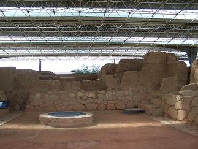
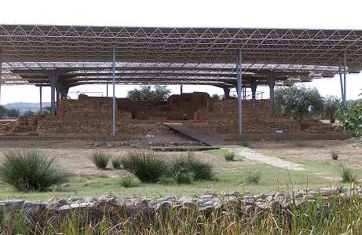
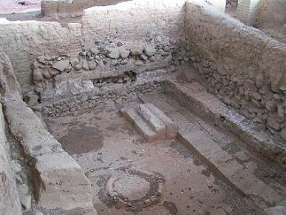
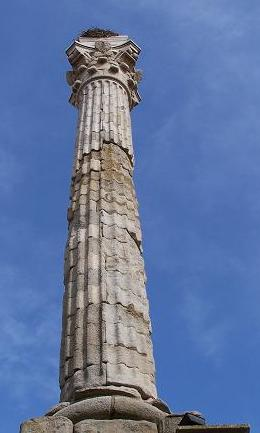
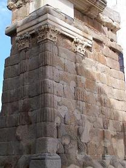
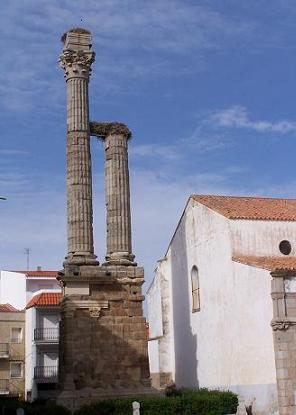

|
ZALAMEA DE LA SERENA
En Zalamea se halla uno de los monumentos más interesantes de la
protohistoria peninsular; "El Palacio-Santuario Tartésico de Cancho Roano"; el rito que se practicaba en este Santuario,
se traslado, a las Cuevas de San José.
Santuario de origen Tartésico, datado entre los
siglos V y VI a.e.c., se encuentra a 10 Km. de Zalamea, en la finca denominada «Cancho
Roano», junto al río Cigancha. Se han encontrado multitud de objetos. Está
orientado al este. La función de Cancho Roano pudo ser triple; Santuario,
Palacio y Almacén de intercambio comercial.
Se conocen muy pocos Santuarios, el de La Cueva del
Valle, es de los pocos Santuarios conocidos hasta ahora.
Una inscripción grabada en un pequeño abrigo, hace referencia al
voto que hizo QUINTUS CORNELIUS QUARTIO ¿a Iuno?, ¿a
Iuppiter?. Se conservan algunos restos de este
Santuario, algunas escaleras y unas cavidades para el agua lustral. Además se
hallaron numerosos exvotos, figuras humanas, principalmente femeninas, junto a
vasos votivos, lucernas... En el siglo V, fue abandonado, destruido y quemado de
manera "ordenada", después de un banquete ritualico para evitar que fuese
profanado y saqueado.
|
 |
 |
 |
Zalamea se identificada como Iulipa.
De época romana destaca el famoso y monumental Dístylo sepulcral dedicado al
emperador Trajano, único en la península, aunque hay otros similares en Siria,
posterior al Dístylo de Zalamea. Fue construido hacia el año 103. Mide 23,23 metros de altura. Es el más alto y
antiguo del mundo.
El monumento está construido con piedra de sillería de granito.
En la calle Santa
Prisca, 79 en el corral de dicha vivienda, existe
una construcción subterránea de época romana, una cisterna romana, sólo se conserva
una parte.
|
 |
 |
 |
Ver
Mausoleos Romanos
|